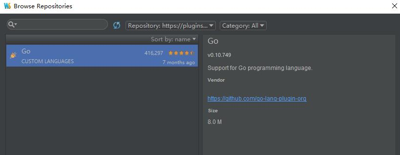

喜欢使用JetBrains旗下的ide
在idea或webstorm下开发go需要安装插件：
https://github.com/go-lang-plugin-org/go-lang-idea-plugin
对ide的版本有一定要求：
IntelliJ IDEA 14.1.4, 15.0.2+ or 16 (Ultimate or Community) –支持社区版，赞
WebStorm 10.0.4 or 11
PhpStorm 9.0 or 10
PyCharm 4.5.2+ or 5
RubyMine 7.1.3+ or 8
CLion 1.0.3+ or 1.2
Android Studio 1.2.1+
插件有两个版本：
- alpha ： https://plugins.jetbrains.com/plugins/alpha/5047
- nightly ：https://plugins.jetbrains.com/plugins/nightly/5047
这两个版本的url地址要注意以下，不是要用浏览器打开的，等下的安装方法里会用到这两个地址。
两个版本的区别是alpha是每周更新一次的，nightly是每天晚上都更新的。应该是alpha更稳定一些吧。
安装方法：
setting -> Plugins -> Browse repositories -> Manage repositories -> 绿色加号
点击绿色加号后，会弹出repository url的输入框，输入上面两个插件之一的url地址。
回到Browse repositories窗口，最上面的搜索框旁边有一个下拉框，选择刚刚添加的respository，就会出现我们要的go插件！
